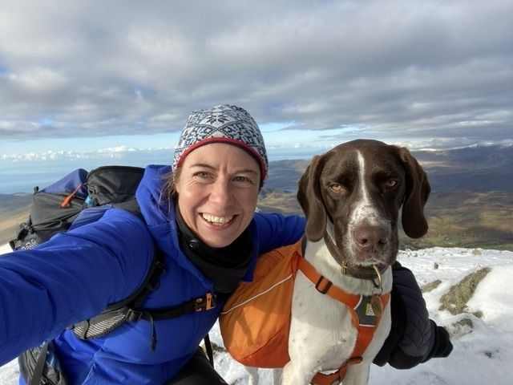

Alex Cross
As an Army Reservist for 11 years in the Royal Army Medical Corps she provided Medical Support for Military summer adventurous training in the Canadian Rockies and the Army Snowboard Championships in Austria. She deployed to Afghanistan on a four-month operational tour in 2010.
Alex is the Emergency Medicine Consultant at Royal Devon and Exeter NHS trust, the Service Lead consultant for Major Trauma in the Royal Cornwall Hospital Trust and also a Doctor for the Devon Air Ambulance Service. Previously she has worked with the Banff Ski patrol and provided support to charity adventure events in and around the UK. She was the Venue Medical Manager for the Basketball Arena for The London 2012 Olympic Games. More recently she has worked with Syrian Refugees in Northern Greece.
Alex also instructs on remote & wilderness medicine courses as well as range of formal life support courses and Prehospital Medicine courses. She is an Honorary lecturer on an MSc in critical care, retrieval & transfer medicine. Her passion is for well-run medium-fidelity in-situ simulation and human factors training.
She is a lover of adventure sports for the challenge, access to wild environments and harnessing nature. A marathon runner, competitive rower, kayaking around the Cornish and Scottish coastlines and now if that isn’t enough Wingfoiling is her current go-to sport.
